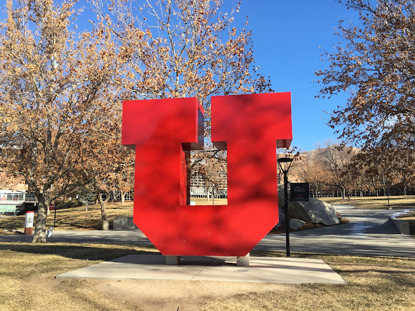
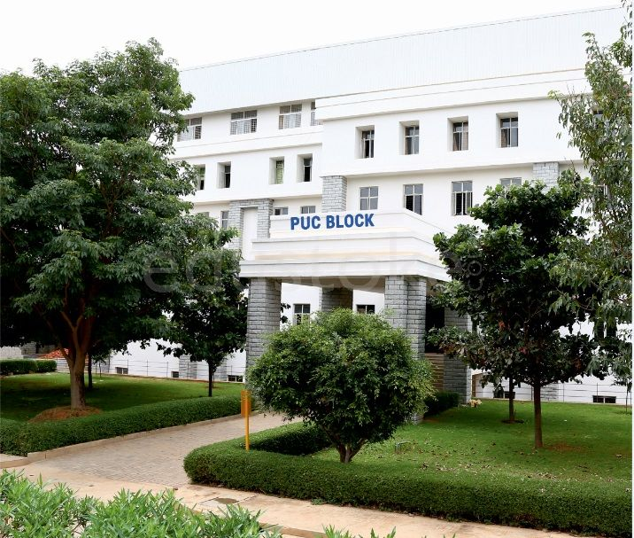

Kahlert School of Computing, The University of UtahMaster of Science, Computer Science
Aug 2023 - May 2025
Salt Lake City, Utah, USA
u1471482@umail.utah.edu

Famous U Statue.
R. V. College of Engineering (RVCE)Bachelor of Engineering, Computer Science & Engineering
Aug 2016 - July 2020
Mysore Road, Bangalore, Karnataka, India
muteeban.cs16@rvce.edu.in
RVCE Front Gate. ID card is mandatory!
Deeksha Reva Independent PU CollegePre-University Education, Computer Science
May 2014 - June 2016
Yelahanka, Bangalore, Karnataka, India

Reva PUC building has nice proverbs.
Deepayan Secondary SchoolKinder Garden, Primary, and High School
Jan 2001 - April 2014
NC Colony, Hospet, Karnataka, India